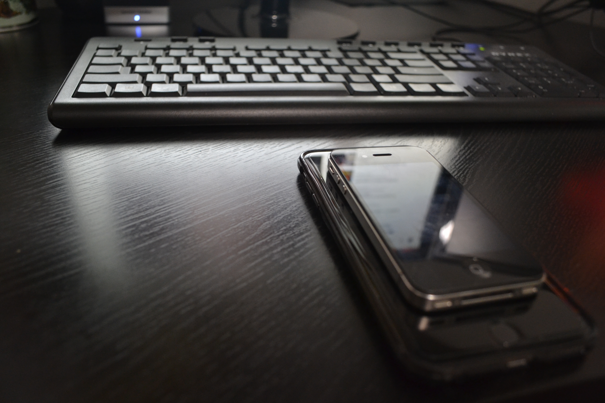

A throwback shot with my first keyboard next to the phones I carried back then—an iPhone 4S and an iPhone 8 Plus. Current phone-as-camera workflow (Pro Max, NDI, OBS) lives with the Cameras category; this page is just the nostalgia lane for handsets.
